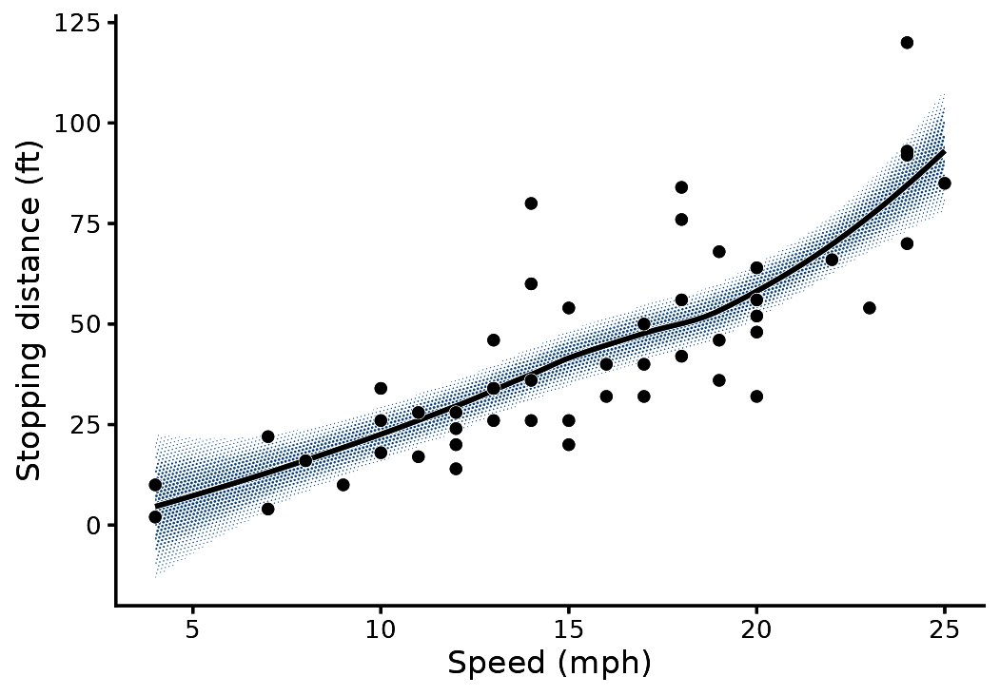
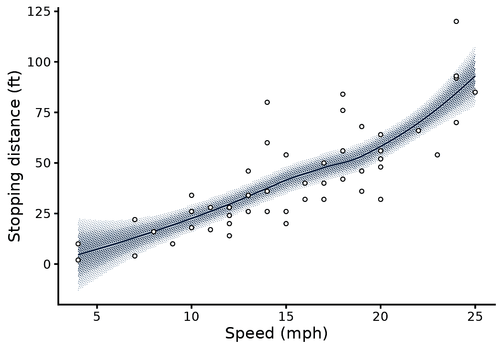
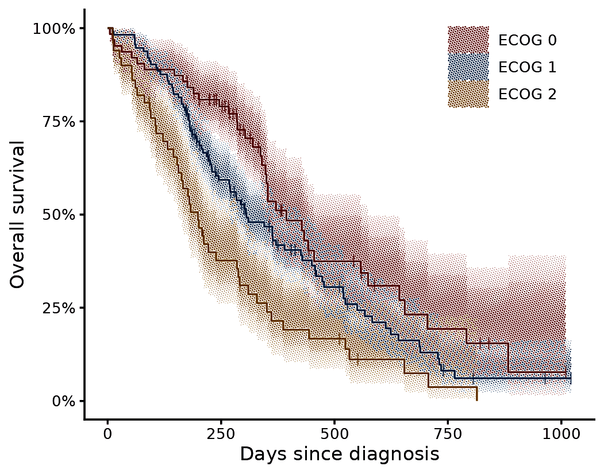
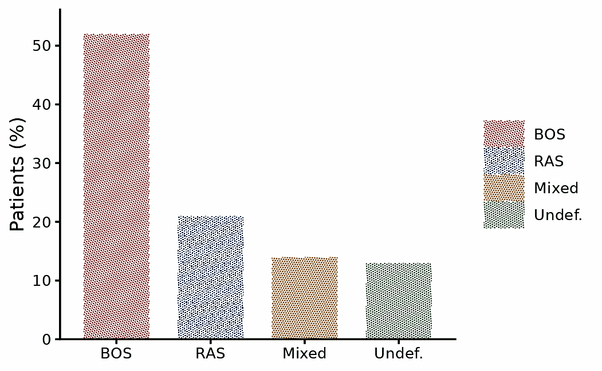
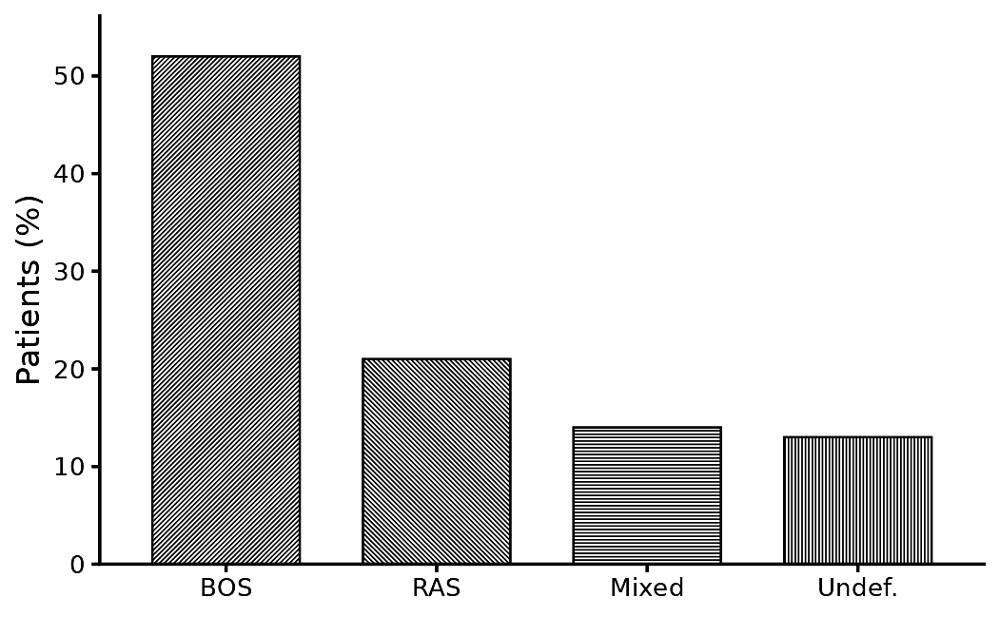

A halftone prints tone as dots of varying size on a fixed lattice. gghalftone applies this to ggplot2 fills at draw time. The lattice has a physical pitch in millimetres, so a figure saved at 89 mm and at 183 mm gets the same screen.
Use it for journal figures. A confidence band stays legible in greyscale, overlapping intervals do not hide one another, and a bar chart can be decoded from its hatching alone.
Screen a whole plot
halftone_plot() takes a finished plot and returns it
printed. It screens every filled layer, draws a paper hairline under
every line that crosses a screen, and adds the theme modifier. Any
argument of with_halftone() passes through.
m <- loess(dist ~ speed, cars, span = 0.9)
nd <- data.frame(speed = seq(4, 25, length.out = 80))
pr <- predict(m, nd, se = TRUE)
nd$fit <- pr$fit; nd$lo <- pr$fit - 1.96 * pr$se.fit; nd$hi <- pr$fit + 1.96 * pr$se.fit
p <- ggplot(nd, aes(speed)) +
geom_ribbon(aes(ymin = lo, ymax = hi), fill = "steelblue") +
geom_line(aes(y = fit), linewidth = 0.6) +
geom_point(data = cars, aes(speed, dist), size = 1) +
labs(x = "Speed (mph)", y = "Stopping distance (ft)") + theme_classic(base_size = 8)
halftone_plot(p)
The treatment follows the geom. Ribbons, areas, densities, bars, tiles, polygons, sf geometries, violins, boxplots and smooths are screened. Lines, paths, steps, contours and points are haloed, but only where a screen sits under them. Text, error bars, rugs and reference lines are left alone, and so is any geom it does not recognise.
It screens the fill and nothing else, so line weights, point shapes and fill colours stay as you set them. The rest of this vignette composes the same figure layer by layer, which is what to do when the figure is built for the screen from the start.
Screen a confidence band
with_halftone() wraps any filled layer. The layer draws
as usual, and its fill is replaced by a screen in the fill colour,
clipped to the shape.
m <- loess(dist ~ speed, cars, span = 0.9)
nd <- data.frame(speed = seq(4, 25, length.out = 80))
pr <- predict(m, nd, se = TRUE)
nd$fit <- pr$fit; nd$lo <- pr$fit - 1.96 * pr$se.fit; nd$hi <- pr$fit + 1.96 * pr$se.fit
ggplot(nd, aes(speed)) +
with_halftone(geom_ribbon(aes(ymin = lo, ymax = hi), fill = halftone_inks[["blue"]])) +
with_halo(geom_line(aes(y = fit), colour = halftone_inks[["blue"]], linewidth = 0.35)) +
geom_point(data = cars, aes(speed, dist), shape = 21, fill = "white", size = 0.8, stroke = 0.3) +
labs(x = "Speed (mph)", y = "Stopping distance (ft)") +
theme_classic(base_size = 8) + theme_halftone()
Three package defaults apply here:
- The band’s tone follows the likelihood of the estimate across the interval. Tone is full on the fitted line and 0.146 at the 95% limit.
-
with_halo()draws a 0.09 mm paper stroke under the line, so the line stays readable where it crosses dots. -
theme_halftone()adds only what a halftone needs to the theme it follows: a paper ground with no gridlines under the screen, legend keys large enough to show a screen, and the ink palette. Sizes and fonts stay withtheme_classic().
Plot survival with three strata
The data are the North Central Cancer Treatment Group lung cancer
trial (Loprinzi et al. 1994), distributed as
survival::lung.
Groups that share a panel are printed on one lattice. Where two bands overlap, their dots alternate, so both inks stay visible.
library(survival)
fit <- survfit(Surv(time, status) ~ ph.ecog, data = subset(lung, ph.ecog < 3))
s <- km_steps(fit); levels(s$strata) <- paste("ECOG", levels(s$strata))
cens <- km_censor(fit); levels(cens$strata) <- levels(s$strata)
ggplot(s, aes(time, group = strata)) +
with_halftone(geom_ribbon(aes(ymin = lo, ymax = hi, fill = strata))) +
with_halo(geom_step(aes(y = surv, colour = strata), linewidth = 0.35)) +
geom_point(data = cens, aes(time, surv, colour = strata), shape = "|", size = 1.6) +
scale_y_continuous(labels = scales::percent) +
guides(colour = "none") +
labs(x = "Days since diagnosis", y = "Overall survival", fill = NULL) +
theme_classic(base_size = 8) + theme_halftone() + theme(legend.position = "inside", legend.position.inside = c(0.82, 0.86))
km_steps() converts a survfit object into
the step-shaped frame that the ribbon needs. km_censor()
returns the censor marks and km_risk() the number at risk.
On ggplot2 4.0 the modifier sets the ink palette as the default.
Screen bars
For geoms whose groups tile the plane (bars, areas, polygons, tiles), each fill also gets its own screen angle and shape. The legend keys show both, and the figure survives greyscale printing.
d <- data.frame(g = factor(c("BOS", "RAS", "Mixed", "Undef."), c("BOS", "RAS", "Mixed", "Undef.")), n = c(52, 21, 14, 13))
ggplot(d, aes(g, n, fill = g)) +
with_halftone(geom_col(width = 0.7)) +
scale_y_continuous(expand = expansion(c(0, 0.08))) +
labs(x = NULL, y = "Patients (%)", fill = NULL) +
theme_classic(base_size = 8) + theme_halftone()
For a one-ink figure, map the screen aesthetic and set
shape = "line".
ggplot(d, aes(g, n, screen = g)) +
with_halftone(geom_col(width = 0.7, fill = "black", colour = "black", linewidth = 0.25), shape = "line") +
scale_screen_discrete(guide = "none") +
scale_y_continuous(expand = expansion(c(0, 0.08))) +
labs(x = NULL, y = "Patients (%)") +
theme_classic(base_size = 8) + theme_halftone()
Save
ggsave_journal() saves at a journal column width. The
file extension selects the format: PNG for proofs, TIFF for submission,
PDF for a vector file in which every dot is a path.
ggsave_journal("fig1.pdf", p, "single", height = 62)
ggsave_journal("fig1.tiff", p, "double", height = 90)
halftone_proof(p) # final-size render plus a 4x crop of the panel centreDefaults
- Pitch is 0.35 mm (73 lines per inch). Coarser pitches read as a dot pattern. Finer pitches read as a flat tint.
- No feature is smaller than 0.09 mm (0.25 pt), the minimum line weight in journal artwork guidelines (Nature Portfolio; Elsevier). Light tone becomes sparse dots at the minimum size.
- The tone profile follows the geometry: flat where the interior is the value (bars, areas, maps), likelihood for intervals, a soft vignette for densities.
- One ink register applies across figure types, so a set of figures looks consistent.
- Overlapping groups share one lattice. A fill’s alpha becomes screen coverage, and the output holds no partial transparency.
References
- Loprinzi, C. L., Laurie, J. A., Wieand, H. S., et al. (1994).
Prospective evaluation of prognostic variables from patient-completed
questionnaires. North Central Cancer Treatment Group. Journal of
Clinical Oncology, 12(3), 601-607. https://doi.org/10.1200/JCO.1994.12.3.601. Distributed
as
survival::lung. - Nature Portfolio. Formatting guide: figures. https://www.nature.com/nature/for-authors/formatting-guide
- Elsevier. Artwork and media instructions. https://www.elsevier.com/about/policies-and-standards/author/artwork-and-media-instructions